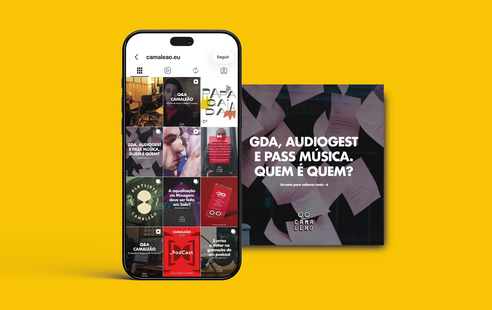
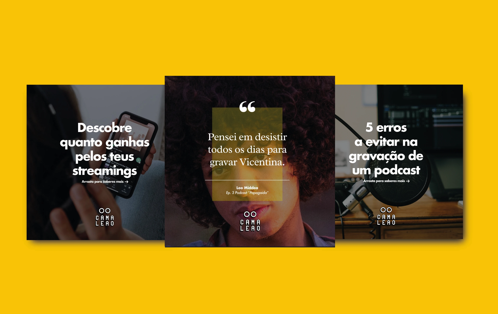
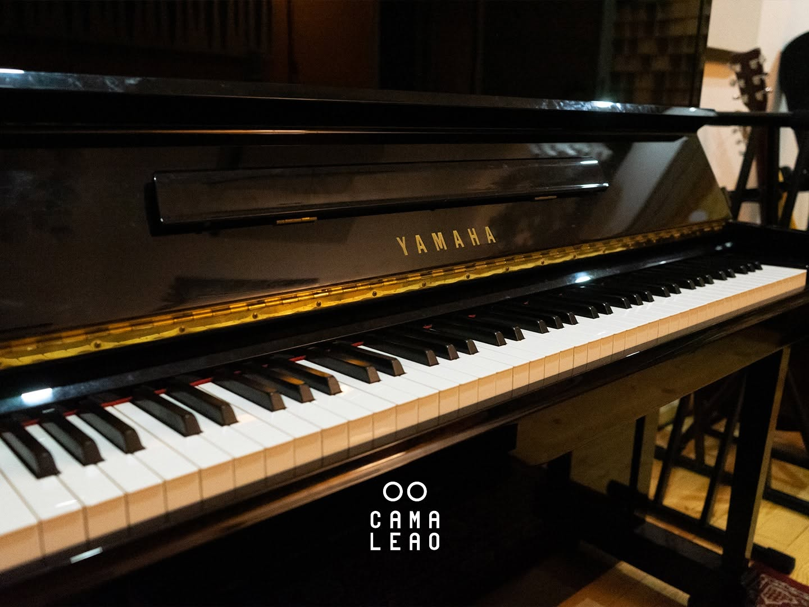
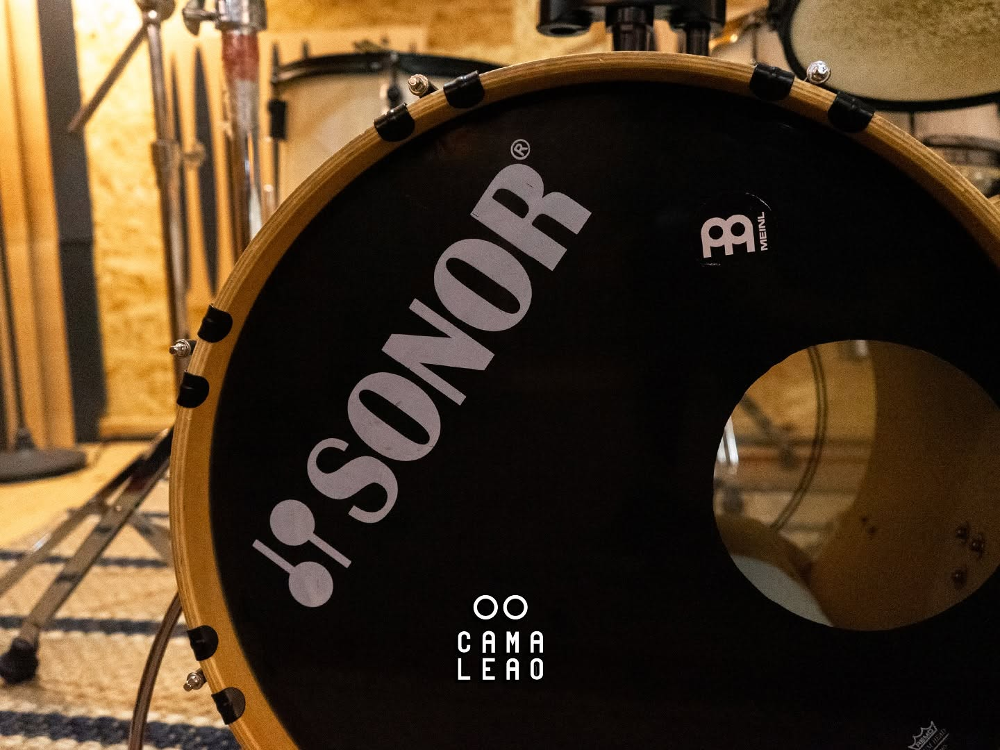
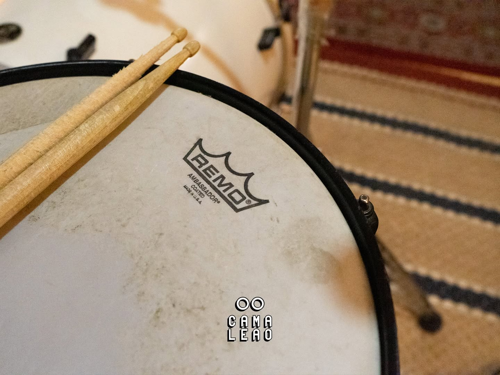
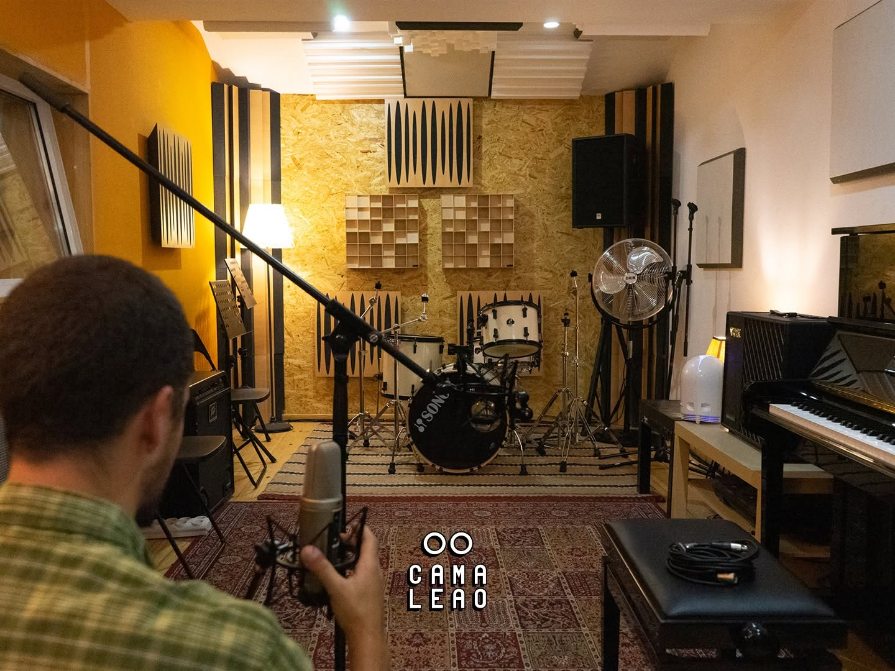

Based in Penha de França, Lisbon, Camaleão is a cultural association and independent registered brand. The collective promotes Portuguese music and culture through education, creative work and event production, with ambitions to reach audiences beyond Portugal.
- Company
Camaleão
- Timeline
- Aug, 20 to Jan, 21
- Scope
- Digital strategy and social media

Challenge
Camaleão wanted to grow its following and encourage more interaction on Instagram and Facebook. My work covered the digital strategy, a new website, social media management and Facebook Ads.
Content and campaigns
I shot the photos and filmed the videos for Camaleão’s social media. We showcased the studio’s services, equipment and music projects, and published educational articles and short weekly Q&A videos.
I ran Instagram giveaways to support campaigns and used three measures to track progress on both platforms: follower growth, engagement and likes.





Instagram videos
Results
The website gave Camaleão a place to present its work and studio offer. On social media, educational content and campaigns gave people more ways to discover the collective and engage with it.
- +102%Follower growth
- Qualified leadsGenerated during the project